Energy Approach and Solutions for Various Loading Conditions
1. Introduction and Problem Formulation
Consider a thin plate subjected to axial compression (the analysis can be extended to the case of multi-axial loading conditions). The goal of this section is to derive the equilibrium and buckling equations by means of the energy approach used for the Euler column.
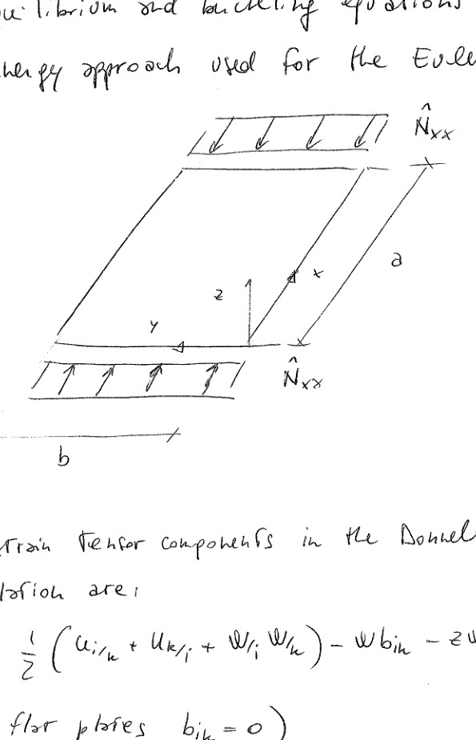
Figure 1: Thin plate subjected to axial compression with coordinate system (x, y, z), distributed axial force \(\hat{N}_{xx}\), and dimensions (a, b)
1.1 Strain Tensor Components
The strain tensor components in the Donnell-von Kármán formulation are:
\[\epsilon_{ik} = \frac{1}{2}\left(u_{i/k} + u_{k/i} + w_{/i} w_{/k}\right) - w b_{ik} - z w_{/ik}\]
For flat plates \(b_{ik} = 0\), and the strain can be written as:
\[\epsilon_{ik} = \mathscr{E}_{ik} + z \kappa_{ik}\]
The equilibrium equations are, in general, non-linear equations. Often the pre-buckling analysis is performed by considering their linearized counterpart but, in principle, the equilibrium condition can be found by solving the non-linear problem.
In the non-linear case, the in-plane and out-of-plane response are coupled. In the linearized case, the coupling between in-plane and out-of-plane behaviour is due to the curvature. For flat panels (\(b_{ik} = 0\)) the two responses are uncoupled.
For isotropic, homogeneous plates or composite plates with symmetric lay-ups, the pre-buckling solution is characterized by \(\bar{w} = 0\). In the presence of coupled in-plane/out-of-plane response (e.g., non-symmetric laminates), \(\bar{w} \neq 0\). In this case, assuming \(\bar{w} = 0\) is an assumption which is worth checking.
If \(\bar{w} = 0\) (or can be reasonably assumed \(= 0\)), then the last buckling equation can be solved independently from the previous ones.
Although boundary conditions were not considered, it is clear from the expression of \(\Delta\Pi\) that the boundary conditions are:
a. homogeneous for the buckling case
b. non-homogeneous for the equilibrium case
In the present approach, the formulation is aimed at deriving the buckling equations (so the problem is formulated in a strong form manner). However, it is worth observing that even the buckling problem can be formulated by means of a direct method (e.g., the method of Ritz), so in a weak form manner. In this case, the Ritz method could be applied to the functional:
\[\frac{1}{2} \delta^2\Pi\bigg|_{@equil.} = \frac{1}{2} \int_A \left[w_{/i} w_{/k} \bar{N}_{ik} + \left(u_{i/k} + \bar{w}_{/i} w_{/k} - w b_{ik}\right) \cdot N_{ik}^L - w_{/ik} M_{ik}\right] dA\]
For the case of flat plates with no coupling between in-plane and out-of-plane response, the functional simplifies to:
\[\frac{1}{2} \delta^2\Pi\bigg|_{@equil.} = \frac{1}{2} \int_A \left[w_{/i} w_{/k} \bar{N}_{ik} - w_{/ik} M_{ik}\right] dA\]
6. Solution for Axially Compressed Simply-Supported Plate
The equilibrium and buckling equations are now solved for the special case of simply-supported panel, subjected to axial load.
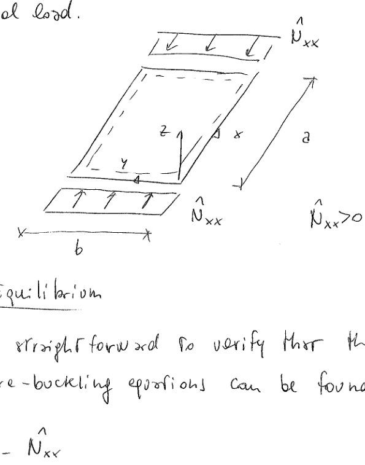
Figure 2: Simply-supported plate panel subjected to axial compression (\(\hat{N}_{xx} > 0\) in compression)
6.1 Equilibrium Solution
It is straightforward to verify that the solution of the pre-buckling equations can be found as:
This solution (trial, so far) satisfies both the essential (\(w = 0\) on \(\partial\Omega\)) and the natural conditions (\(w_{/xx} = 0\) and \(w_{/yy} = 0\) on the transverse and longitudinal edges).
The number of \(m\) that makes \(\hat{N}_{xx}\) minimum has to be found. To this aim, a graphical representation of the nondimensional parameter \(\left(\frac{m}{r} + \frac{r}{m}\right)^2\) is presented:
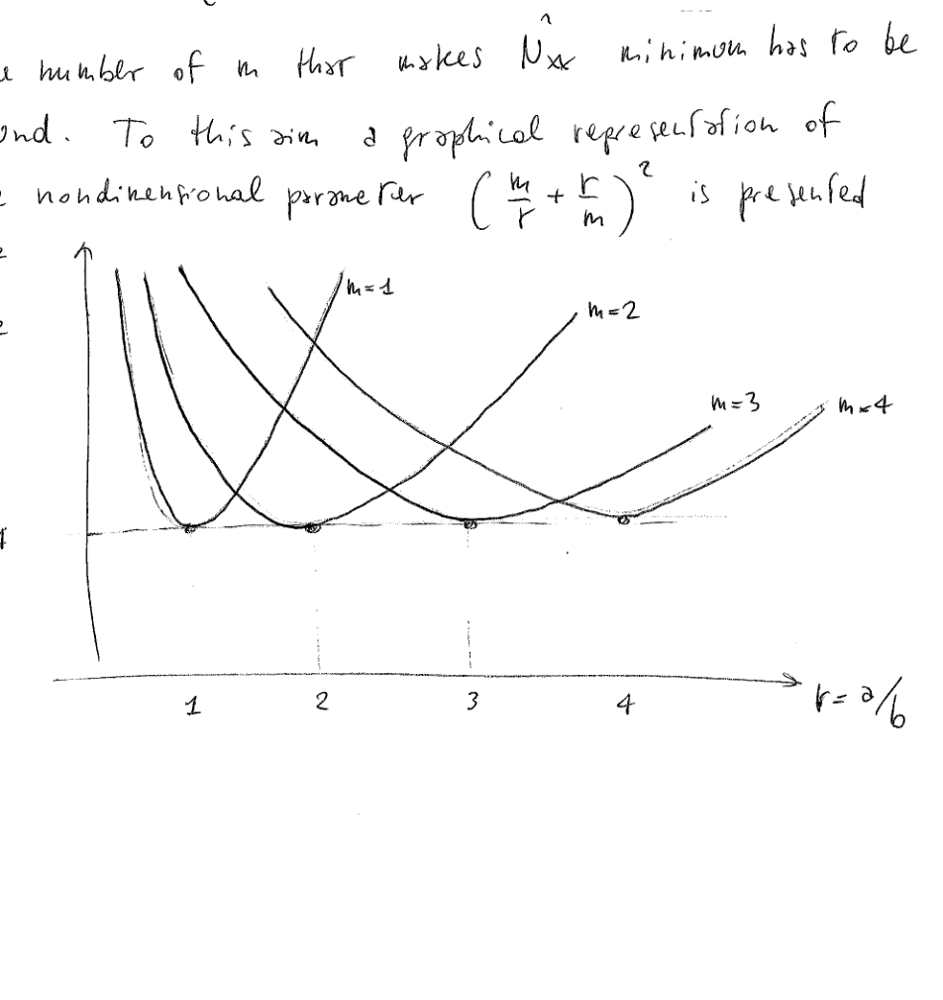
Figure 3: Buckling load parameter \(\frac{\hat{N}_{xx} b^2}{D\pi^2}\) versus aspect ratio \(r = a/b\) for different mode numbers
Remarks on the Buckling Solution
The minimum value assumed by the nondimensional parameter \(\frac{\hat{N}_{xx} b^2}{D\pi^2}\left(\frac{m}{r} + \frac{r}{m}\right)^2\) is 4. This happens for integer values of \(r\). Whenever \(r\) is non-integer, the value of \(\left(\frac{m}{r} + \frac{r}{m}\right)^2\) is higher than 4. Asymptotically, i.e., for \(r \rightarrow +\infty\), the value is equal to 4.
The buckling mode is always characterized by \(n = 1\). On the contrary, the value of \(m\) depends on \(r\). For integer values of \(r\), \(m = r\). This means that the buckling pattern is characterized by square buckles.
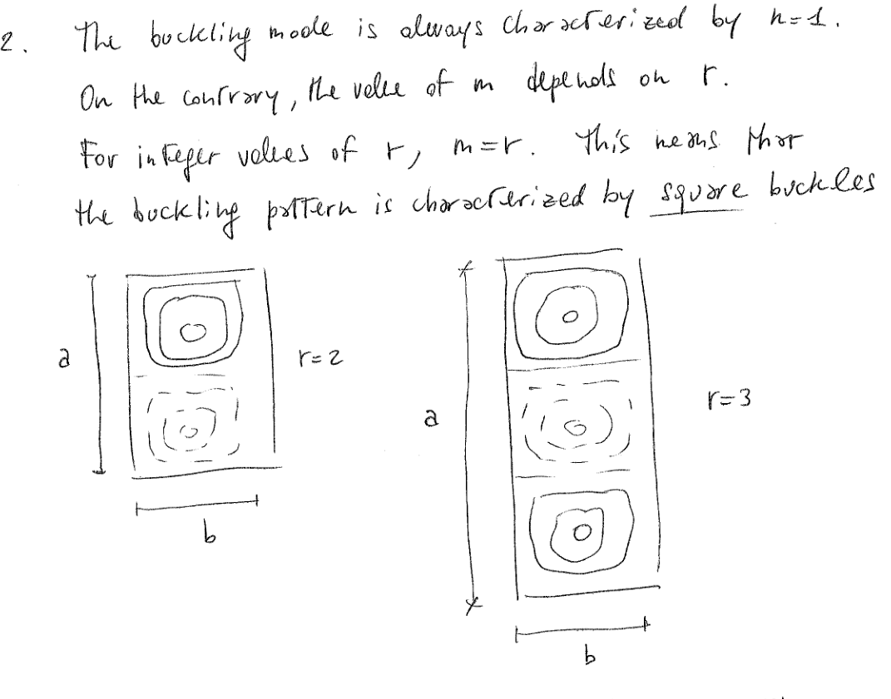
Figure 4: Buckling mode patterns showing square buckles for \(r = 2\) and \(r = 3\)
If \(r\) is non-integer, the buckles will be not exactly square, but mostly square.
6.4 Coincident Buckling Modes
For some specific values of \(r\) \(\left(r = \sqrt{m(m+1)}\right)\), two coincident buckling modes exist:
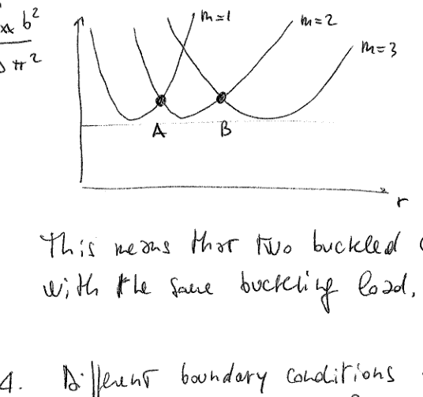
Figure 5: Coincident buckling modes at points A (\(m = 1\) and \(m = 2\)) and B (\(m = 2\) and \(m = 3\))
This means that two buckled configurations are associated with the same buckling load.
6.5 Effect of Boundary Conditions
Different boundary conditions or loading conditions can be handled by means of approximate techniques (Ritz, Galerkin, Levy, ...). In general, the results can still be represented as function of a nondimensional parameter in the form \(\frac{\hat{N}_{xx} b^2}{D\pi^2}\) (for the compressive case).
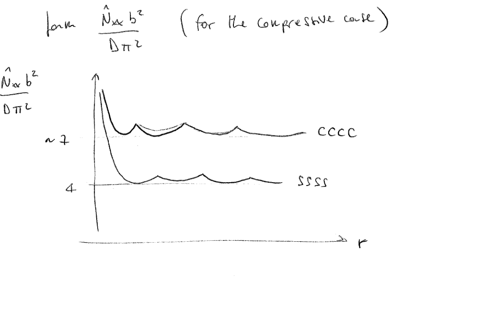
Figure 6: Normalized buckling load versus aspect ratio for different boundary conditions (CCCC: all edges clamped; SSSS: all edges simply-supported)
Notice that the expression is now function of \(\gamma\) (⇒ \(\hat{N}_{xx}\) depends on the loading condition, i.e., the ratio between the transverse and the longitudinal load).
7.4 Interaction Curves
It is then possible to represent the buckling loads obtained for different values of \(\gamma\) in the form of interaction curves:
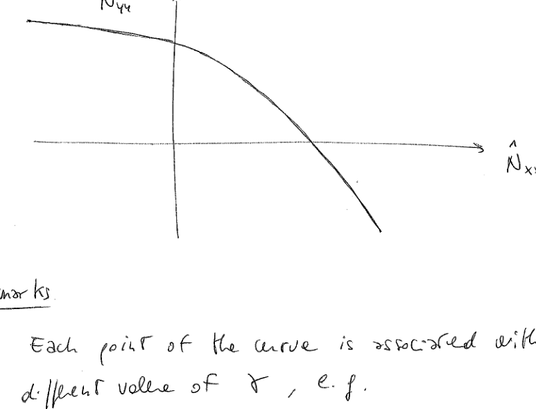
Figure 8: Interaction curve showing relationship between \(\hat{N}_{xx}\) and \(\hat{N}_{yy}\) buckling loads
Remarks
Each point of the curve is associated with a different value of \(\gamma\):
Point A is obtained by considering \(\gamma = 1\)
Point B: \(\gamma = 2\), and so forth
Point C: pure transverse compression
Point D: pure longitudinal compression
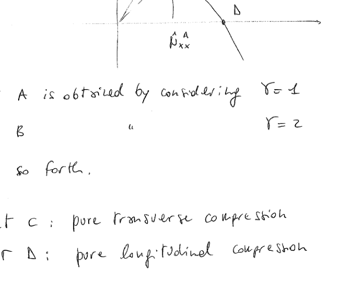
Figure 9: Interaction diagram showing points A, B, C, D representing different loading conditions
8. Analysis of Different Loading Quadrants
\(\hat{N}_{xx}\) and \(\hat{N}_{yy}\) were defined \(> 0\) in compression, so:
Figure 10: Plate buckling patterns under different loading conditions in the four quadrants of the \(\hat{N}_{xx}\)-\(\hat{N}_{yy}\) plane
Key Observations
No instability phenomena is associated with a biaxial tensile loading condition (pretty obvious!)
The presence of tensile loads has the effect of raising the buckling load
8.1 Combined Compression and Shear
In a similar way, interaction curves can be derived for another common combined loading condition, i.e., compression and shear. In this case the curve is in the form:
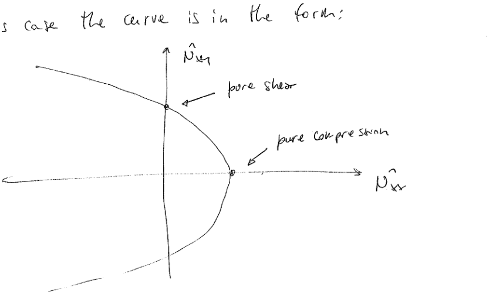
Figure 11: Interaction curve for combined compression and shear loading
8.2 Buckled Shapes
As seen, the buckled shape for pure compression is characterized by almost square halfwaves.
For pure shear, the buckled surface is characterized by skew halfwaves:
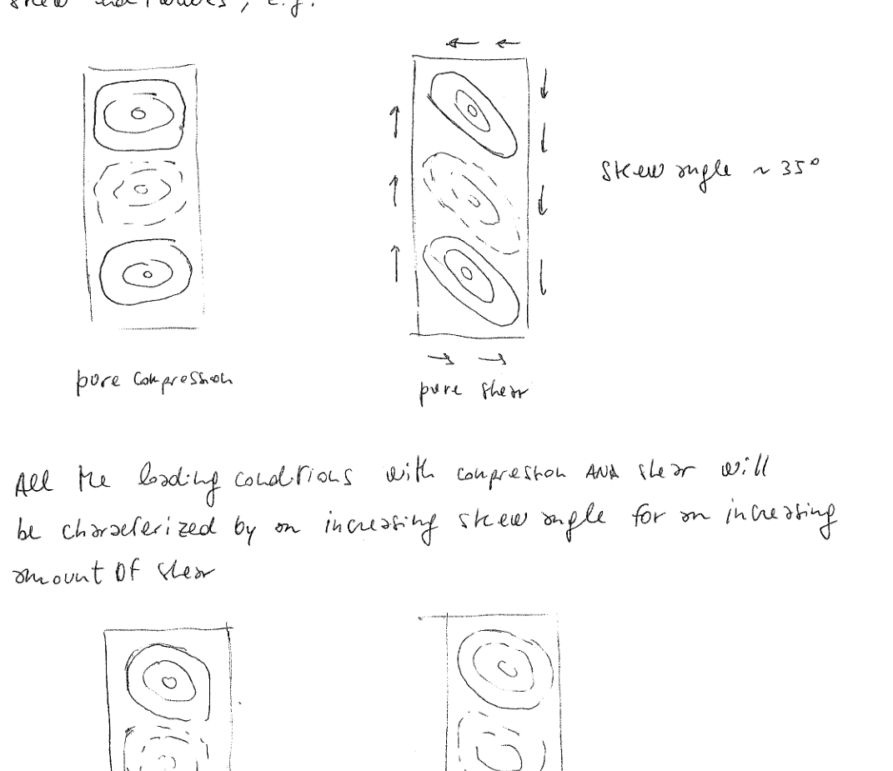
Figure 12: Buckling patterns for pure compression (square buckles) and pure shear (skewed buckles at ~35° angle)
All the loading conditions with compression and shear will be characterized by an increasing skew angle for an increasing amount of shear.
Final Remarks
The interaction curve is symmetric with respect to the x-axis ⇒ the sign of the shear does not affect the buckling load.
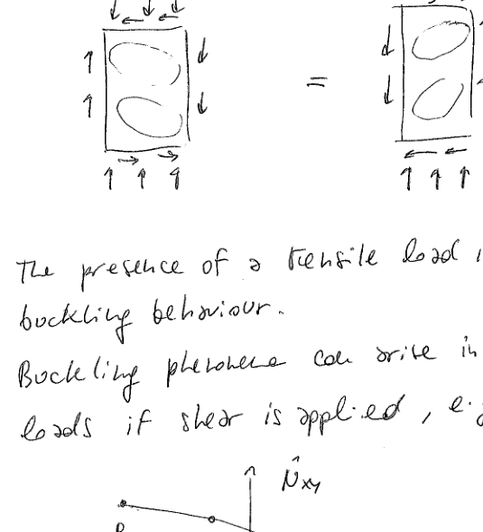
Figure 13: Equivalent buckling patterns for opposite shear directions
The presence of a tensile load is beneficial in terms of buckling behaviour. Buckling phenomena can arise in the presence of tensile loads if shear is applied, e.g., points A and B.
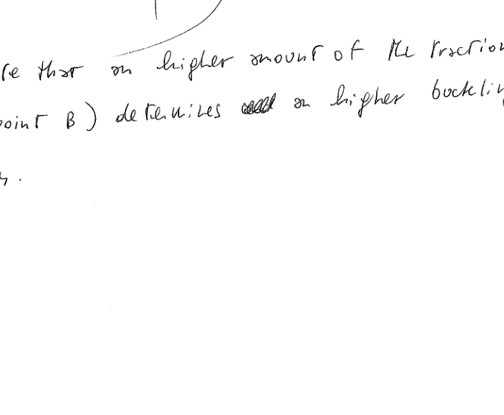
Figure 14: Interaction curve showing that buckling can occur with tensile \(\hat{N}_{xx}\) if sufficient shear is present
Note that a higher amount of the traction load (point B) determines a higher buckling load \(\hat{N}_{xy}\).